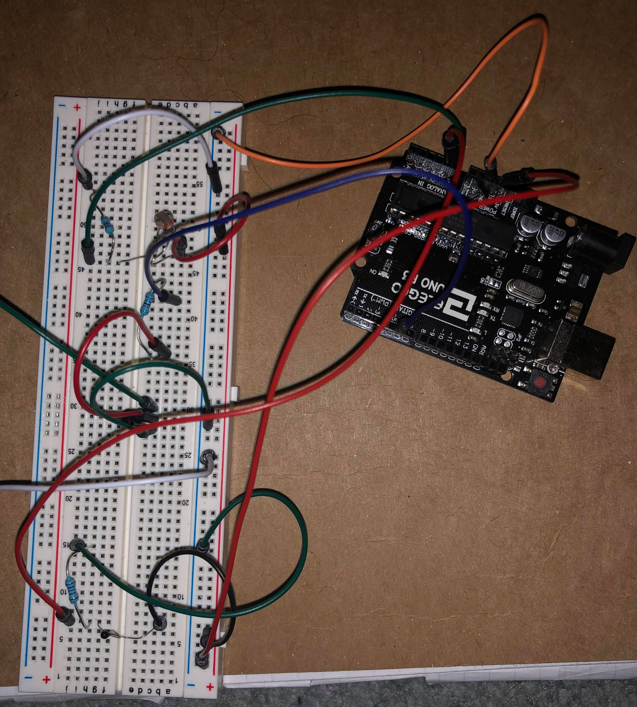
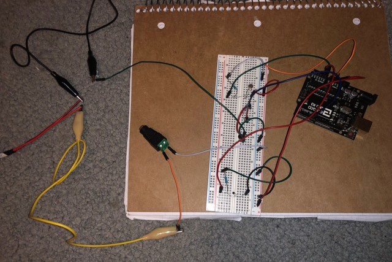
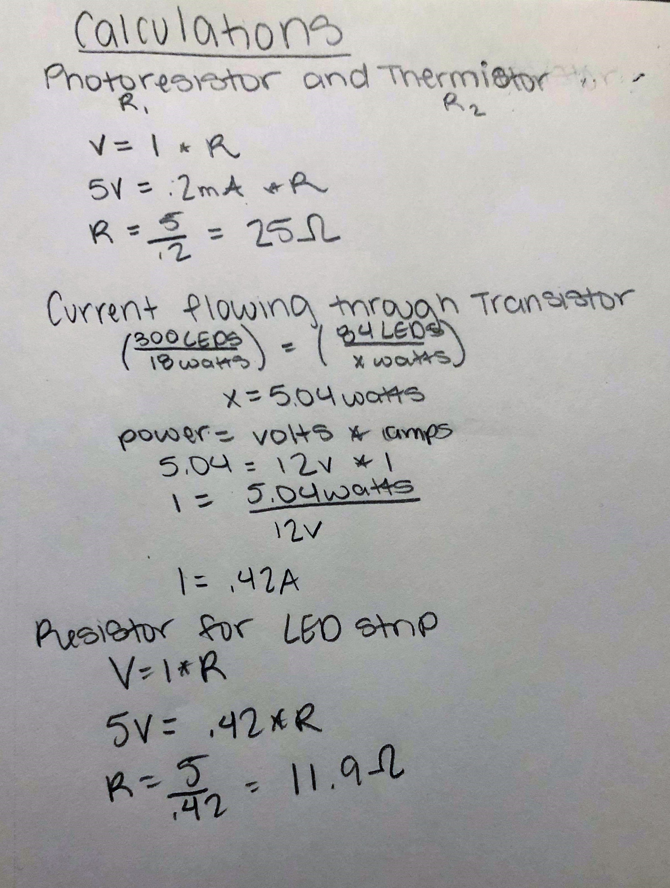
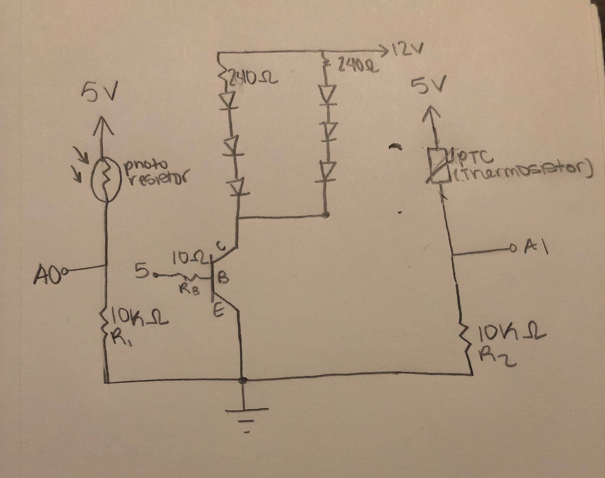
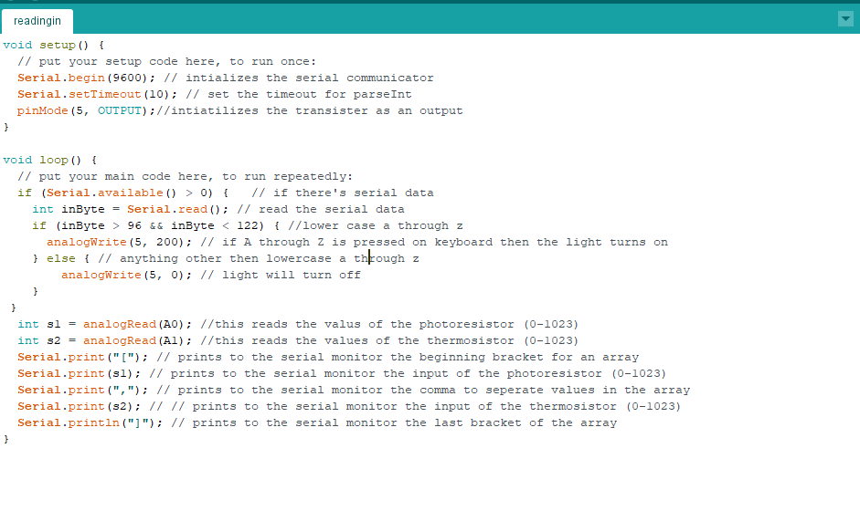
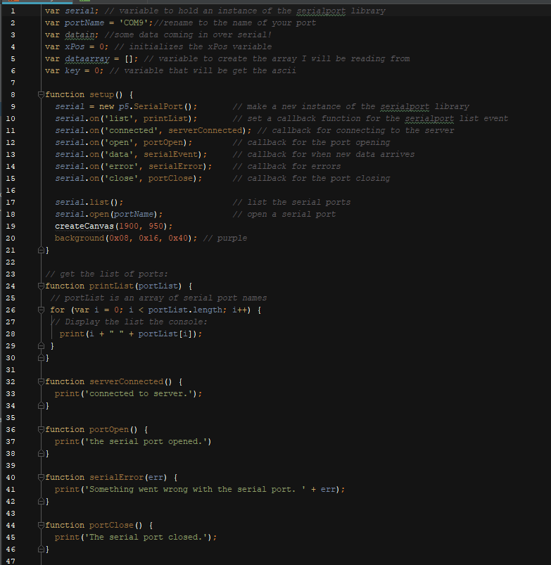
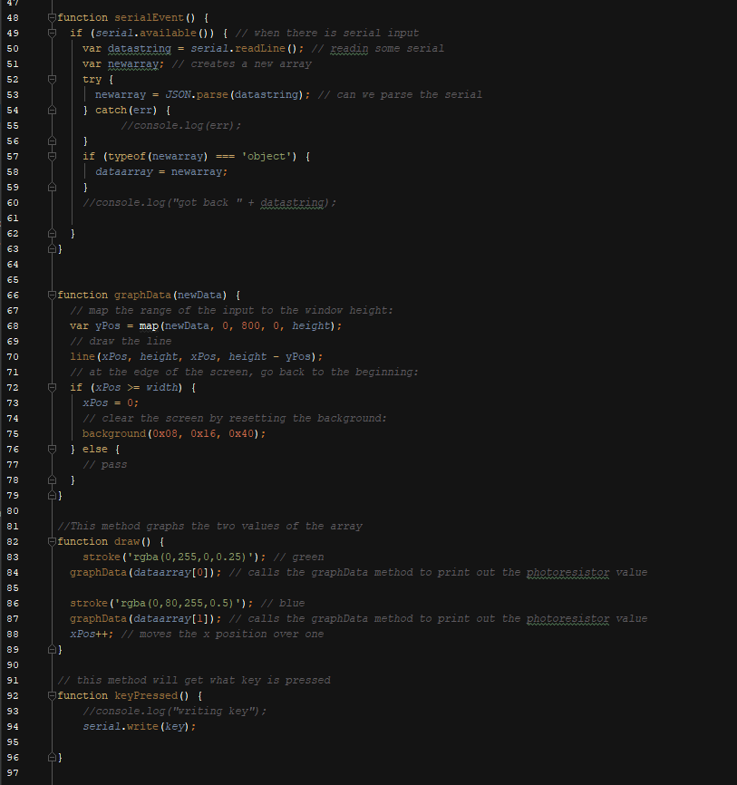
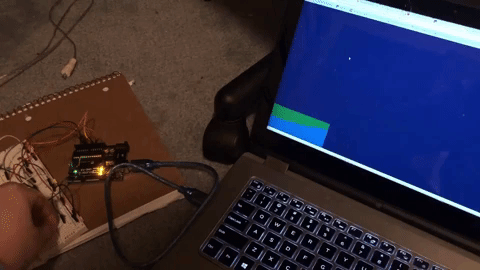
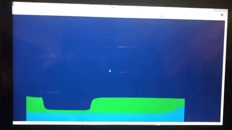

Courtney McKee's Assignment 7!
Here is all the documentation for assignment 7 which inlcudes the circuit board, schematic, a code snippet, and the circuit operation!!
Circuit
 
This is the circuit. The thermistor is connected to pin A1, the photoresistor to pin A0, and the transistor to pin 5. The thermistor and photoresistor will makes changes to the webpage and the webpage will make changes to the led strip.
Schematic
 
This is the schematic for the circuit and the calculation for the resisitors. For the first calculation I used 5V because this is the voltage coming from the controller board. I used 20mA for I because that is the desired current. I used a 10K resistor for R1 and R2 because it could be anything over 25 ohms. I used a 10k resistor for all of them though to insure that there will not be a short and it limits the current.
For the second calculation I was finding how much current is running through the transistor. I found how many lights I was using and found the watts. Using this I found how much current is running through my transistor. As long as it is under.6A then I am not going over the max current. For the last calculation I was finding what the minimum resistance for the transistor which is 11.9 but I used a 10K resistor to insure that there will not be a short and it limits the current.
Code Snippet

 
This is the code that is making the website interactive with the ardunio and the arduino interactive with the website. On the top is the code(firmware) used for the ardunio and on the bottom is code for the p5.js. For the map function in the graphData I chose 800 as the value based on the values being read from analog pin A1 and A2. The analogRead values I was reading ranged from around 300 to 800.
Cicuit Operation

This is a video showing me pressing the keyboard. If anything a - z is pressed then the lights turn on and anything else will turn it off.

This video shows me first touching the thermistor which increases the y position on the graph. I then put my finger over the photoresistor which makes the y position decrease.

This is another video showing that I used twp inputs that interact with the webpage.